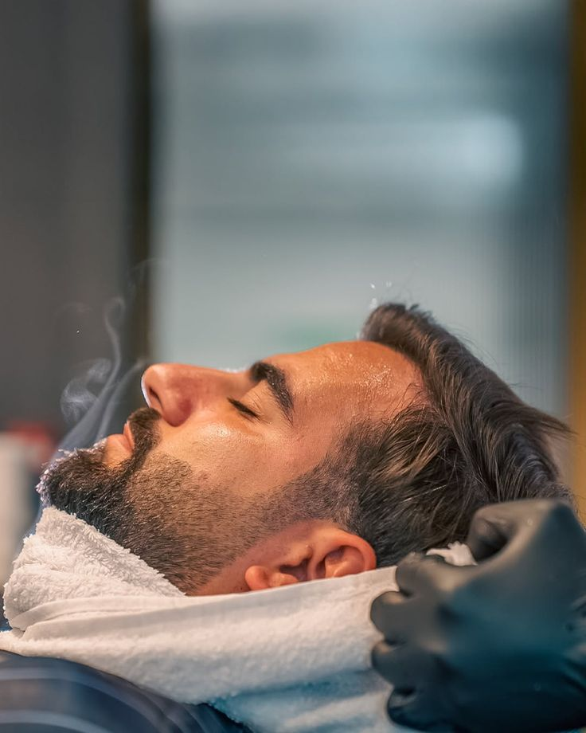
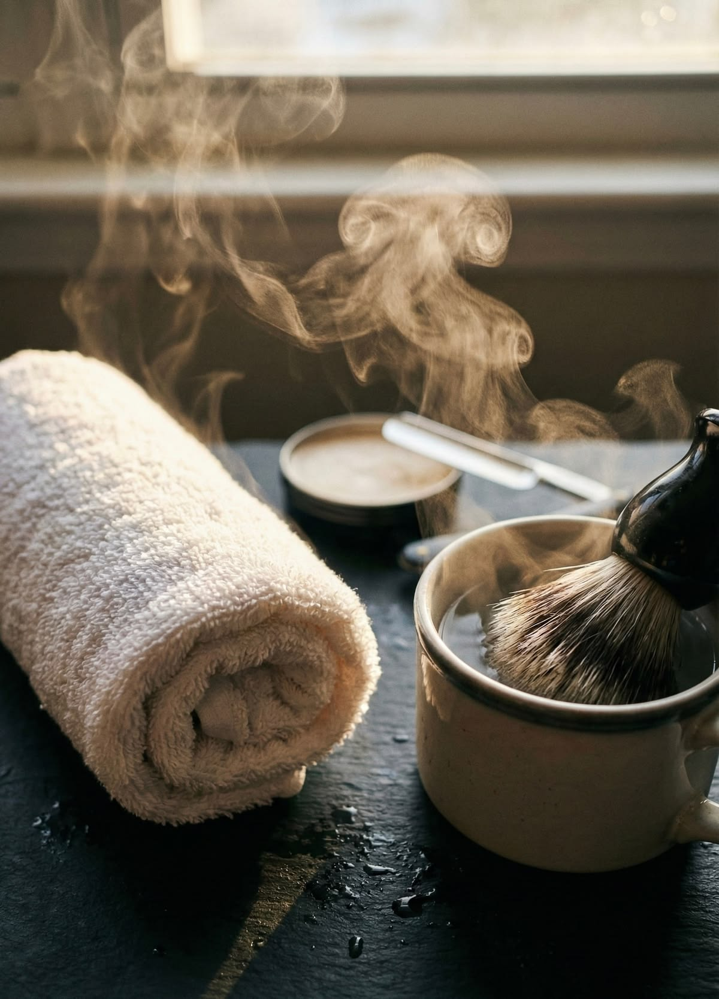

Mi az a hot towel shave?
A hot towel shave – magyarul meleg törülközős borotválás – egy klasszikus barber shop szolgáltatás, amely az egyenes borotva és a meleg gőzös törülköző kombinációján alapul. A módszer évszázados múltra tekint vissza, és ma is az egyik legkeresettebb élmény azok körében, akik igazán gondos borotválást szeretnének.
Az otthoni borotválástól alapvetően különbözik: nem egy gyors, reggeli rutin, hanem egy tudatos folyamat, amelynek minden lépése a bőr előkészítésére, az alapos borotválásra és az utóápolásra épül. Az eredmény egy sima, irritációmentes bőrfelület – ami után az arc napokig rendezettnek és gondozottnak érződik.

Hogyan zajlik a hot towel shave?
A folyamat négy jól elkülöníthető szakaszból áll – és mindegyiknek megvan a maga szerepe az végeredményben.
1. Előkészítés – meleg törülköző
A borotválás előtt meleg, gőzös törülközőt helyeznek az arcra 2–3 percre. A hő felnyitja a pórusokat, megpuhítja a bőrt és felállatja a szőrszálakat – ezzel a borotva könnyebben és simábban csúszik végig az arcon.
2. Borotvakrém felvitele
A meleg törülköző után minőségi borotvakrémet vagy -habot visznek fel ecsettel. Ez további védelmet nyújt a bőrnek, csökkenti a súrlódást és segíti az egyenes borotvát a lehető legközelebb jutni a bőrfelülethez.
3. Borotválás egyenes borotvával
A tapasztalt barber egyenes borotvával – vagy klasszikus biztonsági borotvával – végzi a borotválást. Az irány, a szög és a nyomás pontosan szabályozott: az eredmény egyenletes, sima bőrfelület, vágások és irritáció nélkül.
4. Utóápolás – hideg törülköző és balzsam
A borotválás után hideg törülközővel zárják le a pórusokat, majd borotválkozás utáni balzsammal vagy arcvízzel kezelik a bőrt. Ez megakadályozza a begyulladt szőrtüszőket és nyugtatja a bőrt.

Miért érdemes kipróbálni a hot towel shave-et?
Az otthoni borotválás gyors és kényelmes – de a hot towel shave olyan eredményt ad, amit otthon szinte lehetetlen elérni. Ennek több oka is van.
- Alaposabb borotválás – az egyenes borotva közelebb jut a bőrhöz, mint bármely patron vagy elektromos borotva, így az eredmény simább és tartósabb
- Kevesebb irritáció – a megfelelő előkészítés és technika alkalmazásával szinte teljesen elkerülhető a borotválkozási kiütés és a beégés
- Bőrápoló hatás – a meleg törülközős kezelés és az utóápolás együttesen tisztítja, táplálja és frissíti az arcbőrt
- Relaxáló élmény – a folyamat lassú, tudatos és gondos – sok férfi számára maga a rituálé ugyanolyan értékes, mint az eredmény
- Tartósabb eredmény – az alapos borotválás hatása tovább megmarad, mint az otthoni változaté
Kinek ajánlott a hot towel shave?
A meleg törülközős borotválás szinte minden férfinak megfelel – de különösen azoknak ajánlott, akik rendszeres problémákkal küzdenek az otthoni borotválás kapcsán.
- Érzékeny bőr – a megfelelő előkészítés és az egyenes borotva technikája drasztikusan csökkenti az irritációt és a beégést
- Befelé növő szőrszálak – a meleg törülköző felállatja a szőrszálakat, az egyenes borotva pedig az alap közelében vágja el őket, ami csökkenti a befelé növés esélyét
- Azok, akik különleges alkalom előtt állnak – esküvő, állásinterjú, fontos találkozó – ilyenkor érdemes profi borotválással biztosítani a legjobb megjelenést
- Azok, akik még nem próbálták – a hot towel shave egy olyan élmény, amit legalább egyszer érdemes megtapasztalni
A Bosphorus barber shopban a klasszikus borotválás és a hot towel shave elérhető szolgáltatás – a borbélyok tapasztaltak egyenes borotvával, és az egész folyamatot gondosan, lépésről lépésre végzik el. A Bosphorus barber shop Budapest 7. kerületében található, a Dob utca, a Király utca és az Erzsébet körút közelében – a belvárosból könnyen elérhető.
Próbáld ki a klasszikus hot towel shave-et
Egyenes borotva, meleg törülköző, gondos utóápolás – foglalj időpontot a Bosphorus barber shopba, és tapasztald meg, milyen egy igazán alapos, klasszikus borotválás.